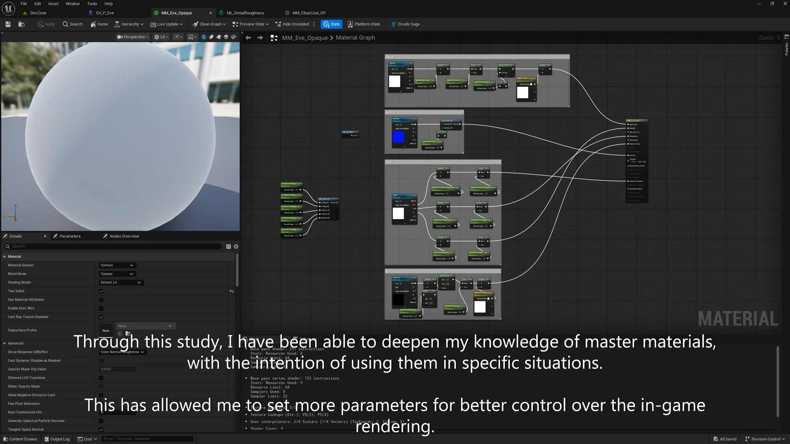
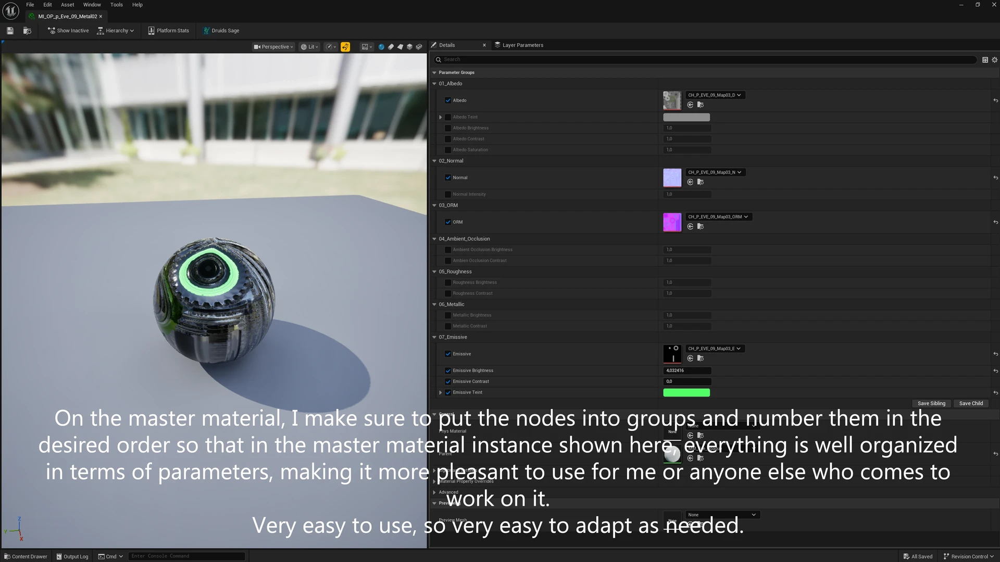
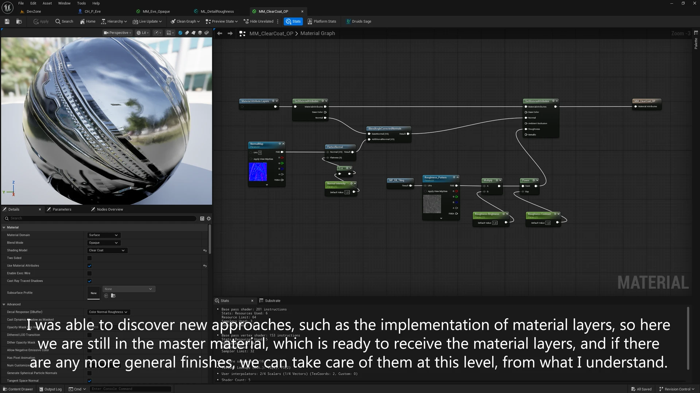
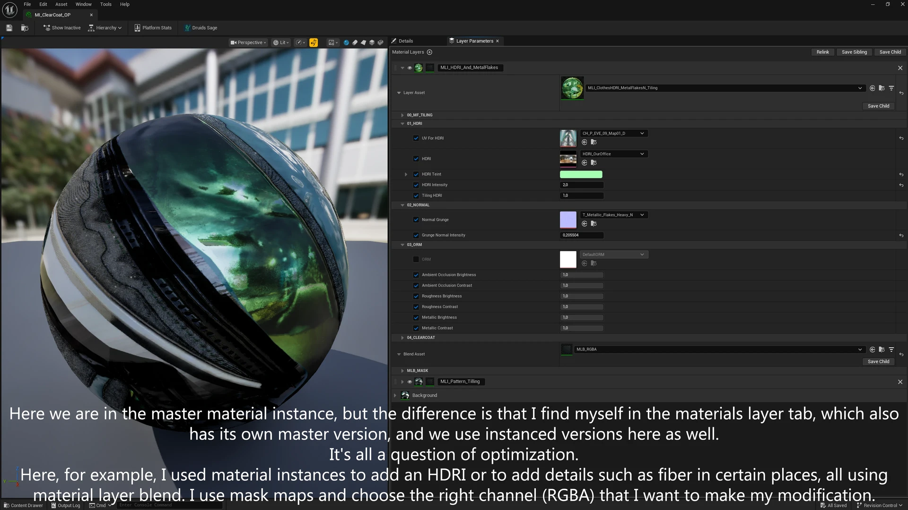
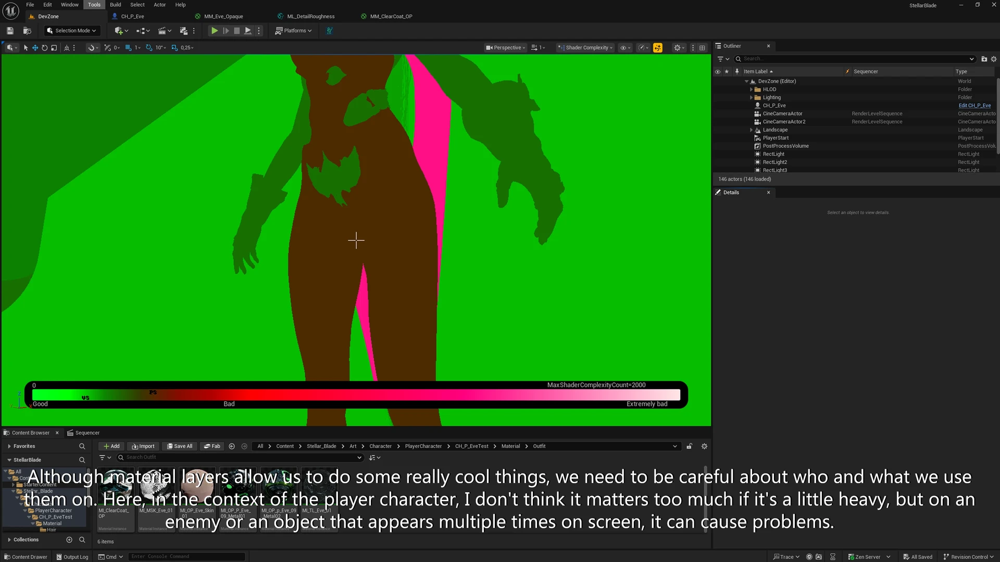
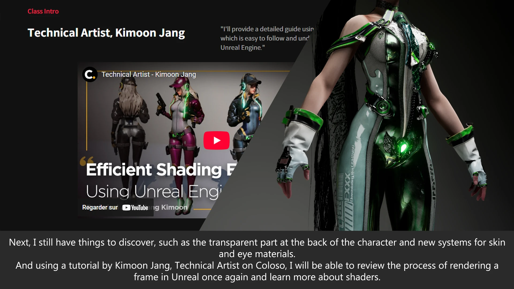
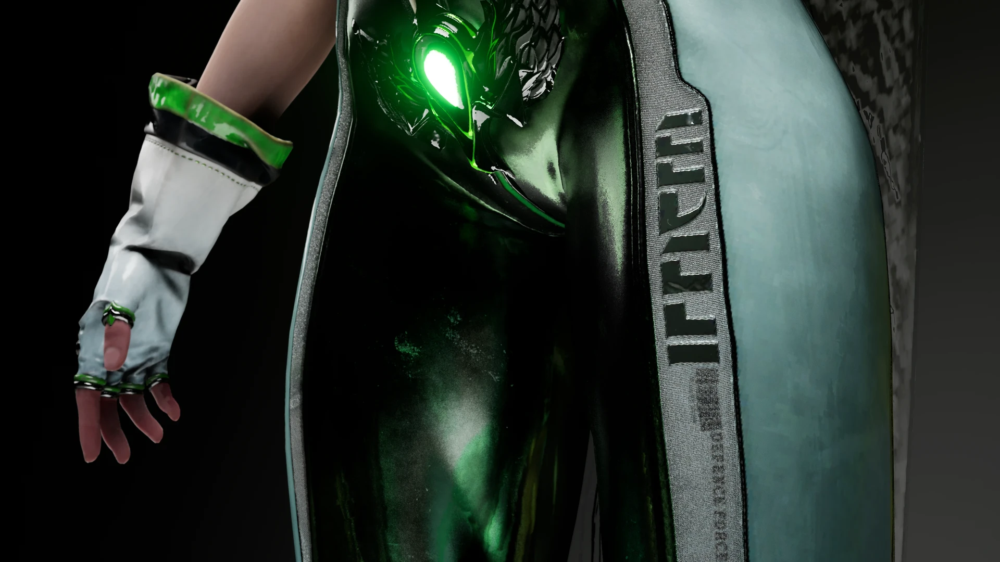

One Master, Many InstancesUn master, de nombreuses instances
Through this study I have been able to deepen my knowledge of master materials, with the intention of using them in specific situations. This allowed me to expose more parameters for better control over the in-game rendering. Cette étude m'a permis d'approfondir ma connaissance des master materials, avec l'intention de les utiliser dans des situations précises. J'ai ainsi pu exposer davantage de paramètres pour mieux contrôler le rendu en jeu.

Instances Built To Be UsedDes instances faites pour servir
On the master material, I make sure to group the nodes and number them in the desired order, so that in the material instance everything is well organized in terms of parameters. Pleasant to use for me, or for anyone else who comes to work on it. Very easy to use, so very easy to adapt as needed. Sur le master material, je veille à regrouper les nœuds et à les numéroter dans l'ordre voulu, pour que tout soit bien organisé côté paramètres dans la material instance. Agréable à utiliser pour moi comme pour quiconque viendra travailler dessus. Très simple à utiliser, donc très simple à adapter selon les besoins.

Discovering Material LayersÀ la découverte des material layers
I was able to discover new approaches, such as the implementation of material layers. The master material is ready to receive the layers, and any more general finishes can be handled at this level. J'ai pu découvrir de nouvelles approches, comme la mise en place des material layers. Le master material est prêt à recevoir les layers, et les finitions plus générales peuvent être gérées à ce niveau.

Layers, Blends & MasksLayers, blends et masques
In the instance, the material layers tab has its own master and instanced versions as well: it is all a question of optimization. I used material layer blends to add an HDRI, or details such as fiber in certain places, with mask maps and the right RGBA channel driving each modification. Dans l'instance, l'onglet des material layers a lui aussi ses propres versions master et instanciées : tout est une question d'optimisation. J'ai utilisé des material layer blends pour ajouter une HDRI, ou des détails comme de la fibre à certains endroits, chaque modification étant pilotée par des mask maps et le bon canal RGBA.

Power, With RestraintDe la puissance, avec mesure
Material layers allow some really cool things, but we need to be careful about who and what we use them on. On the player character it does not matter too much if it is a little heavy; on an enemy or an object that appears multiple times on screen, it can cause problems. Les material layers permettent des choses vraiment intéressantes, mais il faut faire attention à qui et à quoi on les applique. Sur le personnage joueur, ce n'est pas très grave si c'est un peu lourd ; sur un ennemi ou un objet qui apparaît plusieurs fois à l'écran, cela peut poser problème.

Still To DiscoverEncore à découvrir
I still have things to discover, such as the transparent part at the back of the character, and new systems for skin and eye materials. Using a tutorial by Kimoon Jang, Technical Artist on Coloso, I will review the process of rendering a frame in Unreal once again and learn more about shaders. Il me reste des choses à découvrir, comme la partie transparente dans le dos du personnage, et de nouveaux systèmes pour les matériaux de peau et d'yeux. Avec un tutoriel de Kimoon Jang, Technical Artist sur Coloso, je vais revoir une fois de plus le processus de rendu d'une image dans Unreal et en apprendre davantage sur les shaders.

Final RenderRendu final
Eve re-shaded from scratch in Unreal Engine, working from the game's textures with very little public information to lean on. Eve, avec des shaders refaits de zéro dans Unreal Engine, à partir des textures du jeu et avec très peu d'informations publiques sur lesquelles s'appuyer.
